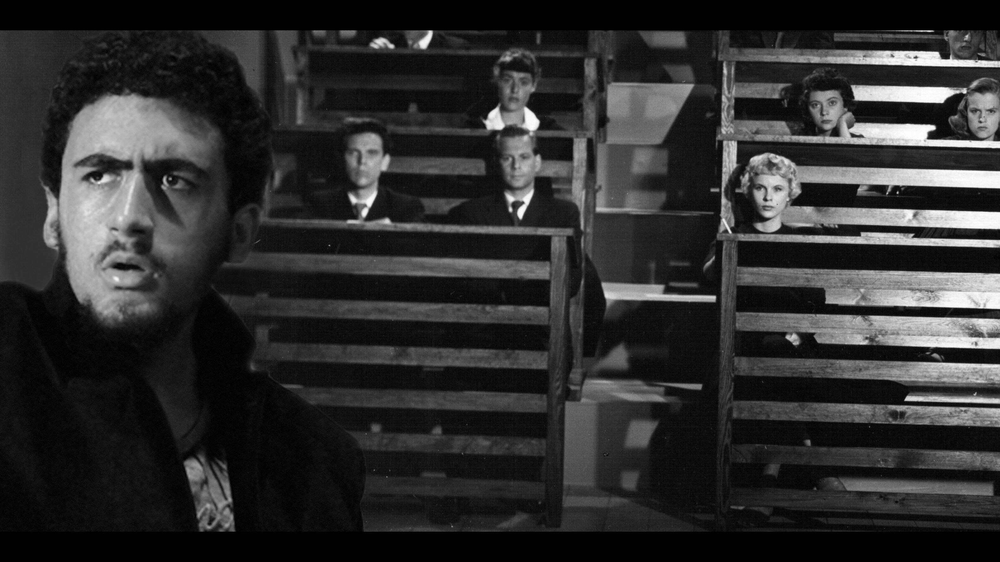

<div class="container">
	<div class="row center">
		
		<header class="12u">
			<h2>{{=it.title}}</h2>
			<span class="byline">{{=it.name}}</span>
		</header>
		
		<section class="3u">
			<section class="sidebar left">
				<header>
					<h2>Ficha Tecnica</h2>
				</header>
				<ul class="default">
					<li>Data da Estreia: {{=it.birthdate}}</li>
					<li>Origem: {{=it.from}}</li>
				</ul>
				<header>
					<h2>Making of</h2>
					<span class="byline">e outros trabalhos</span>
				</header>
				<ul class="default">
					<li><a target="_blank" href="files/research/{{=it.researchProject}}">Projeto de Pesquisa</a></li>
					<li><a target="_blank" href="files/article/{{=it.article}}">Artigo Cientifico</a></li>
					<li><a target="_blank" href="files/project/{{=it.productProject}}">Projeto de Desenvolvimento</a></li>
					<li><a target="_blank" href="{{=it.product}}">Produto Midiatico</a></li>
				</ul>
			</section>
		</section>
		<section class="9u justify center">
			<a href="http://www.imdb.com/title/tt0050986/" class="image full"></a>
		</section>
		<section class="12u justify center">
			<h2>Sinopse:</h2><p>Gustavo Borg é um jovem estudante que, depois de passar um ano tendo aulas de final de semana para ingressar na universidade, finalmente consegue uma vaga no curso de Midialogia. Para comemorar, revisita vários momentos marcantes de seu passado durante uma viagem de carro até sua antiga escola técnica. Quanto mais Borg recorda as decepções e desilusões que viveu, incluindo projetos de escrita abandonados e uma escola de inglês que não vingou, mais ele sente que encontrou seu lugar na Unicamp, onde ele lhe foi dado ensinamentos sobre responsabilidade, confiança, amizade, perseverança e auto-crítica.</p>
		</section>
		<section class="12u">
			<div class="divider"></div>
			<a href="#" class="button medium">Anterior</a>
			<a href="#" class="button medium">Proximo</a>
		</section>
	</div>
</div>
